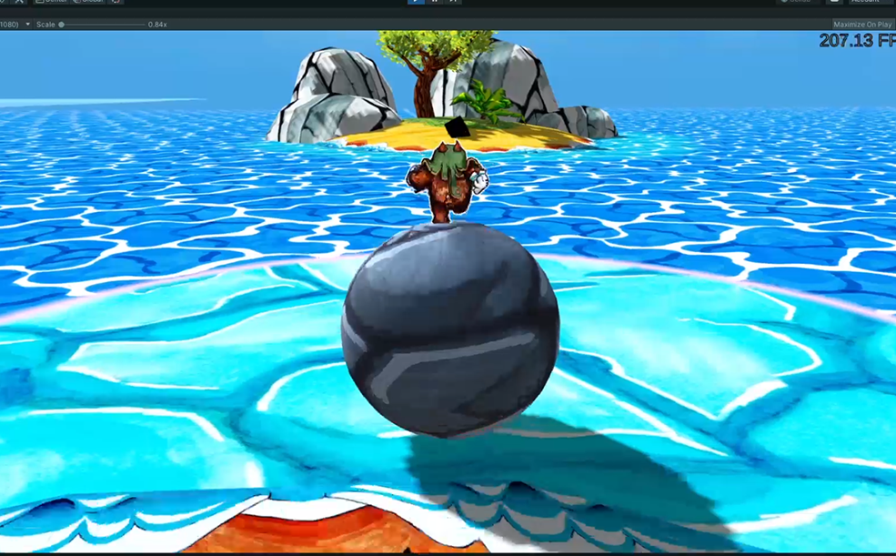

1 / 7

All game textures in Ruffy and the Riverside are hand drawn.
2 / 7
3 / 7
4 / 7

5 / 7
The game is created with Unity with C# as a programming language.
6 / 7
Trailer to 'Ruffy and the Riverside'.
7 / 7
This video shows one of my level implementations.
Ruffy and the Riverside
Description
Ruffy and the Riverside can be described as a puzzle-adventure game with many references to the old zelda games. My scope of work during my internship included mainly the implementation of the game logic for different levels and puzzles. In addition, I was able to participate in various game design decisions and to develop concepts for different puzzles.
My Tasks
implementation of the game logic in different levels in consultation with the responsible game designers
work on different cutscenes within Unity
conceptual work on level and puzzle design
Date
03/2021 - 06/2021